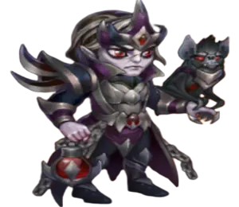

#17 Dorian
Dorian está de volta ao meta depois de receber suas relíquias. Ele se encaixa em times poderosos do Caos e se torna especialmente perigoso ao lado de Iris: sua Aura de Vampirismo pode torná-la extremamente difícil de derrubar. A melhor parte é o baixo custo para começar a usá-lo. Evolua sua habilidade de vampirismo e ele já poderá produzir resultados, pois a aura permanece no campo de batalha mesmo depois que Dorian é eliminado.
Leia o guia completo do Dorian